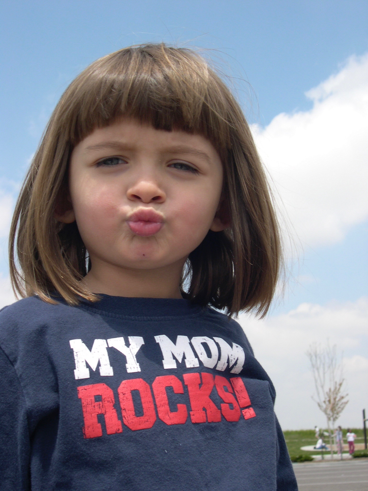

Name
Grace Schulist
Pronouns
She/her/hers

View my picture.
About Me
I'm a Creative Technology and Design major in my second semester at CU. I'm from Johnstown, Colorado but I am currently living at William's Village. I am also currently pursuing a minor/possible double major in Media Production through the College of Media, Communication, and Information Science.
My Goals for Web
- Remind myself how to refer to CSS files inside of HTML files (it's on the tip of my brain but I can't remember D:).
- Learn how to use tools like Boostrap and Figma since I didn't get the chance to use them much in previous web classes.
- Make the prettiest/most badass looking website ever.
My Favorite YouTube Video
View my favorite YouTube video.